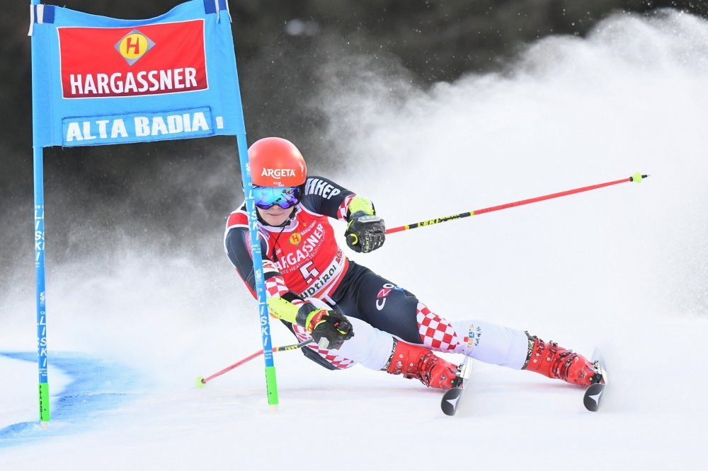
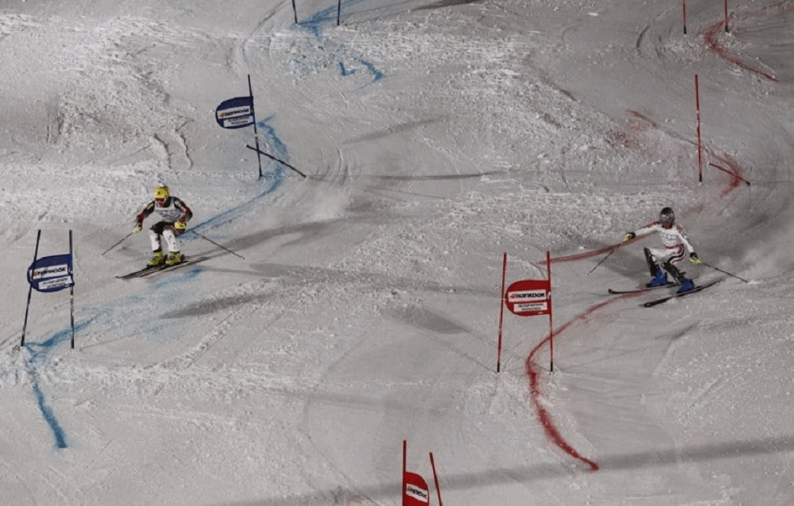
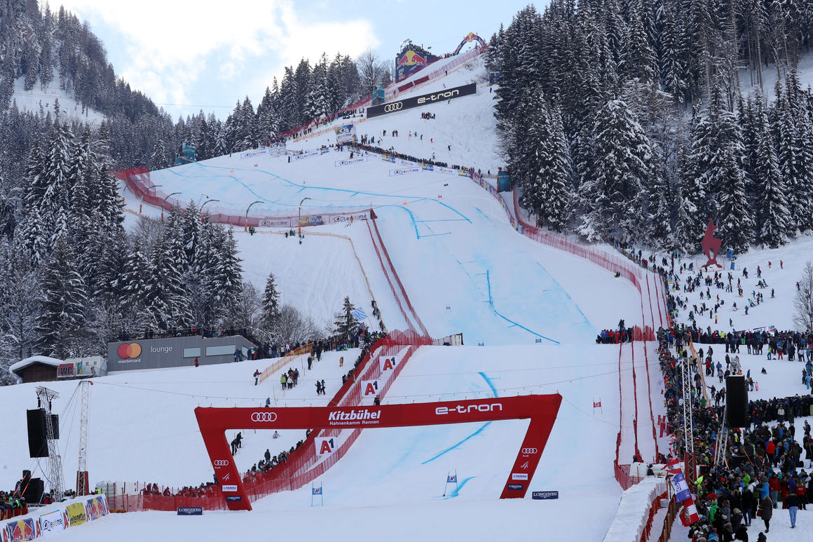
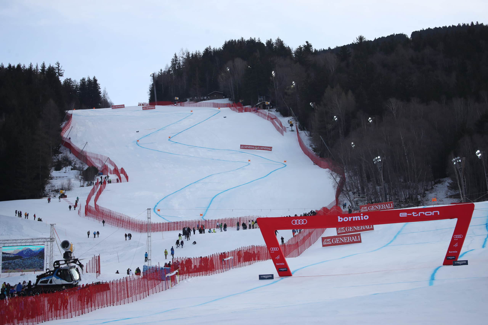

Što je to Alpsko skijanje?
Alpsko skijanje je vrlo raširen način skijanja na planinskim padinama prekrivenim snijegom. Ime je dobilo po Alpama, planinskom gorju u Europi gdje je tradicija takvog načina skijanja i začeta. Iako je alpsko skijanje danas rašireno u cijelom svijetu i na svim kontinentima, naziv se zadržao do danas. Ovaj vid skijanja vrlo je raširen vid rekreacije ali i jedan od standardnih olimpijski športova na zimskim Olimpijskim igrama.Kroz povijest su se tehnike alpskog skijanja često značajno mijenjale. Razloga za te promjene bilo je više, osim same domišljatosti pojedinih učitelja skijanja tu je i tehnološki napredak materijala, oblika i funkcionalnosti skijaške opreme, nivo uređenosti staza, itd. Alpske natjecateljske skijaške discipline su: slalom, veleslalom, spust, super-veleslalom, alpska kombinacija i paralelna natjecanja. Neslužbeno bi ih mogli kategorizirati na tehničke (slalom i veleslalom) i brzinske (spust i super-veleslalom) discipline.Bavim li se ja ovim sportom ili ga samo volim?
Zvuk:
Pravila alpskog skijanja
Natjecatelj je ispravno prošao kroz vrata kada su oba vrha njegovih skija i oba stopala prošli liniju vrata. Ako natjecatelj
izgubi skiju, bez počinjene greške odnosno ako nije zajahao slalomski štap, tada vrh preostale skije i oba stopala moraju proći liniju vrata.
Linija vrata u spustu, veleslalomu i super G, gdje se vrata sastoje od dva para štapova sa promidžbenim oglasima između njih, je zamišljena najkraća
linija između dva unutrašnja štapa na nivou snijega. Linija vrata u slalomu je zamišljena najkraća linija između štapa oko kojeg se okreće i vanjskog štapa.
U slučaju da natjecatelj pomakne štap iz njegove okomite pozicije prije nego što su oba vrha natjecateljevih skija i oba stopala prošla liniju vrata, vrhovi skija i stopala
i dalje moraju proći originalnu liniju vrata koja je označena na snijegu. Isto tako zabranjen je nastup ako trenira na stazi koja je zatvorena za sve natjecatelje,ako nije
nastupio na najmanje jednom treningu spusta sa mjerenjem vremena, te ako ne nosi zaštitnu kacigu koja odgovara pravilima o natjecateljskoj opremi, ili nema stopere na svojim
skijama. Također zabrana vrijedi ako je bio eliminiran u prvoj vožnji iako je prekršio pravila. Ako je natjecatelj startao na natjecanju a komisija kasnije utvrdi da je prekršio
jedno od ovih pravila, komisija mora natjecatelja kazniti.




